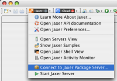
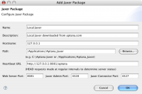

Contents |
What
The Jaxer Package Server is a pre-configured Jaxer/Apache stand-alone server.
How
Getting to the Connection Window
  Open connection window
Open connection window
{kind=link}
The Connect to Package Server dialog box can be accessed in two ways:
- On the My Aptana - Jaxer page Actions list, click the last link: Connect to Jaxer Package Server
- Click the Jaxer menu in the top left corner of the IDE. A drop-down menu includes the Connect to Jaxer Package Server option.
Using the Dialog Box
 Connect to a Jaxer Package Server
{kind=link}
A popup-window allows you to connect to an instance of the Jaxer Package Server, the pre-configured Jaxer/Apache stand-alone server.
You can edit the following properties:
- Name
- Description
- Hostname - This will be the hostname or IP address where the Jaxer Package is available, usually 127.0.0.1 or localhost.
- Path - The local path to the installation directory, e.g. C:\Aptana Jaxer or /Applications/Aptana_Jaxer
- Heartbeat URL - This will be the URL where HEAD requests will be sent at regular intervals to determine server status, defaults to: http://127.0.0.1:8081/aptana
- Web Server Port - The port your Jaxer Package server will be running on. This should match the port specified in the Heartbeat URL field. By default the serve listens on 8081 to minimize conflicts.
- Jaxer Admin Port - This is the port JaxerManager is listening on for its commands (JaxerManager Command Line Interface (CLI) Reference)
- Jaxer Connector Port - This is the port web requests from the web server will use to connect to Jaxer.